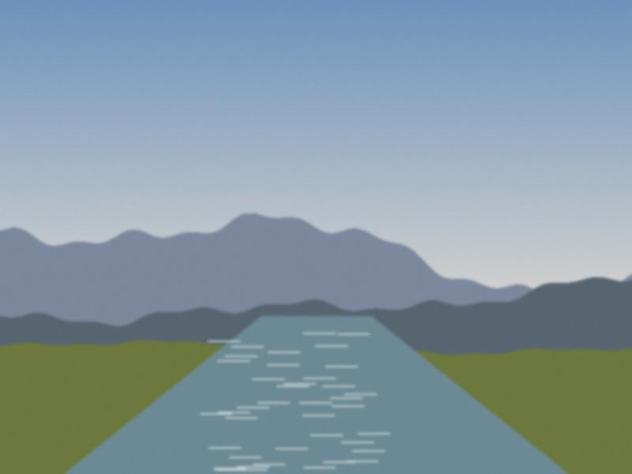
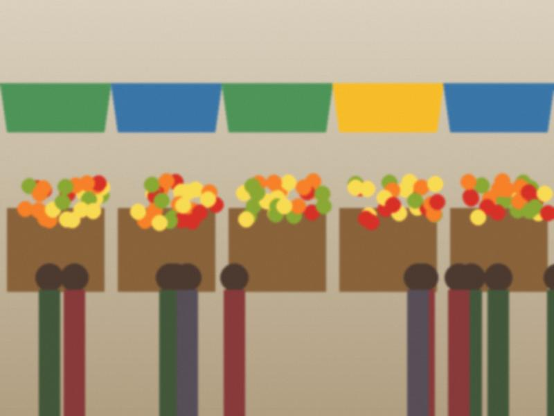
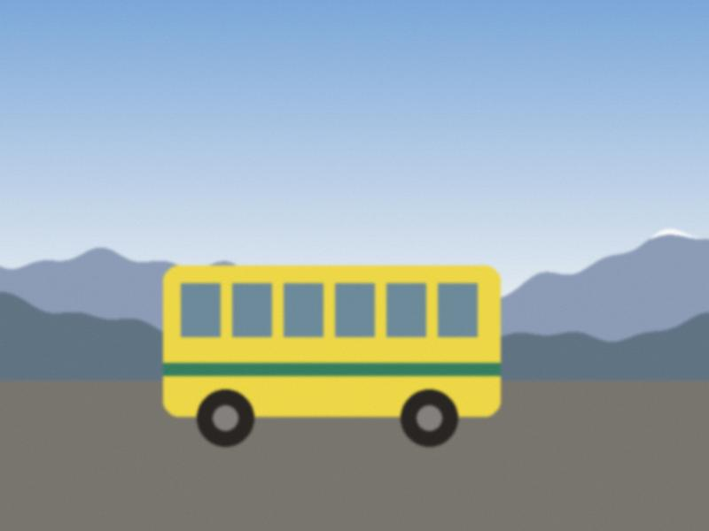
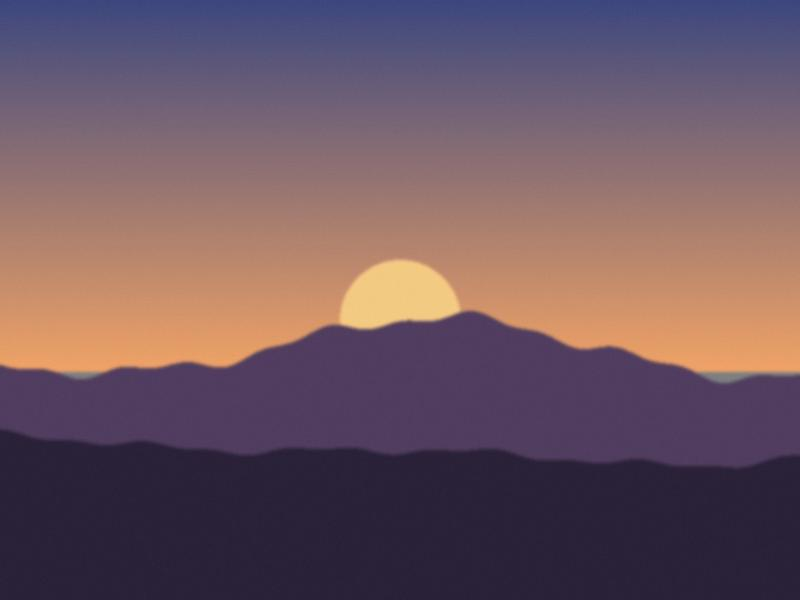
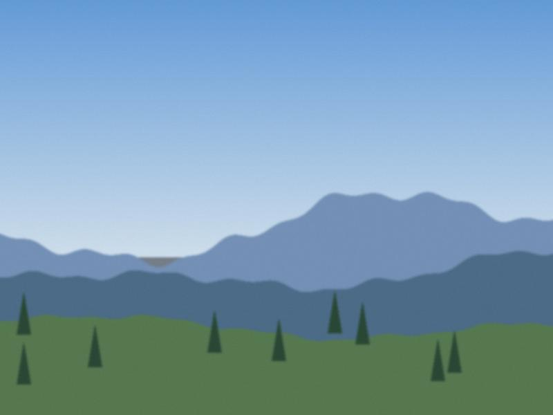
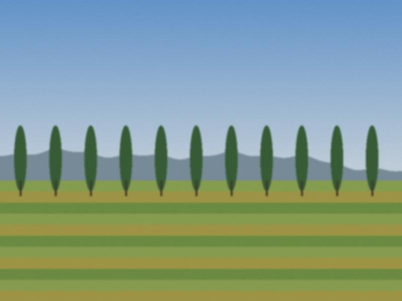
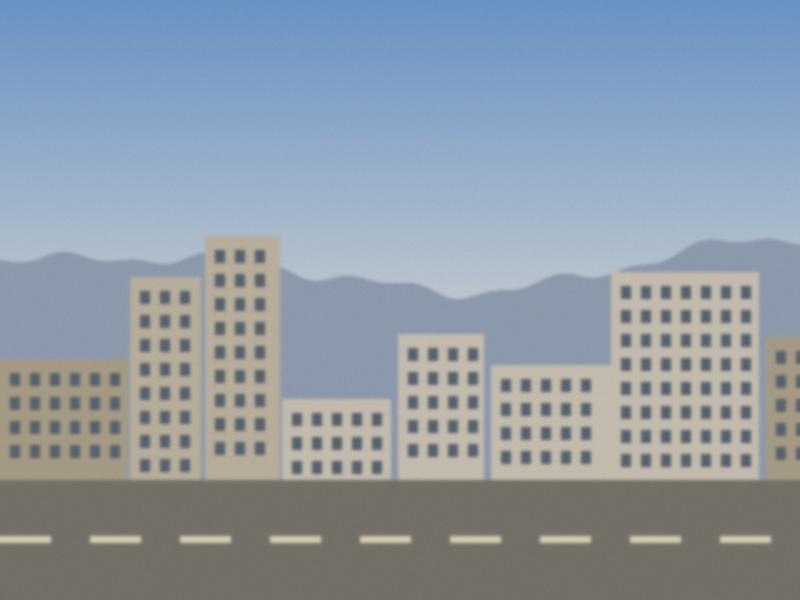
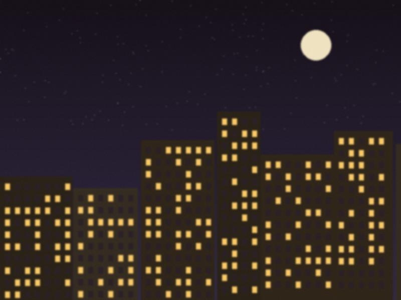

A note before leaving
I am starting at a newspaper in Talas. A few lines about what these long pages were for.

The man at the door of the old bathhouse
In the Old City of Talas the moncho has stood for two centuries. Its attendant has never taken a bath there.

Coal weather
In Tash-Kömür, the coal town below Iyık Janyl, the first frost is announced by a smell. The men who deliver it say they never have a day off in winter.

The keeper of Aulie-Ata
A small town where the Talas leaves its valley, a mausoleum with a green dome, and an old man who has locked and unlocked its door every morning since 1971.

Under the red cliff
At Kyzyl-Senir, the church's wine ripens in clay jars buried in caves. The brothers who tend it say it is not a winery. It is a patience.
Sunday at the sheep market in Bazar-Korgon
Every Sunday, before sunrise, six thousand animals and a few thousand men arrive in a town at the edge of the Fergana rim. By ten, it is over.

The bus to the end of the line
The village bus runs from the Talas bazaar to the last village before the hills. Two hours, forty stops, and a driver who knows every passenger's mother.

Forty years of weddings in one lens
Murat Alibekov photographed the weddings of two generations of Talas. He will tell you which family is still angry about which photo.

Train No. 1
Seven hours and a quarter from Talas to Nurzhan, in a carriage the age of its conductor, with a samovar that the whole carriage guards.

The museum of the labour collective
In the antimony-works settlement of Sary-Bulak, the house of culture keeps a museum of the people who built it. Its curator is eighty-one and she knows every face.

Night shift at the boiler house
In every block of flats in Nurzhan someone keeps the heat on. A night with the stokers of a district boiler house.

The fish women of the reservoir road
On the road along the Toktogul reservoir, women stand all summer with strings of smoked fish hanging from long poles. They smell like a bonfire and they never go home hungry.
The potters of Sopol-Tepa
Four hours south of Talas, in a village at the edge of the Fergana rim, the plates for every plov in Irad are made by hand. The clay arrives on a donkey.

The house of culture that never closed
In the Kara-Buura district a Soviet house of culture still hosts a komuz ensemble every Thursday. Nobody has paid for the heating since 1998.
The telegram clerk
In the Iradi Telegraph Office in the Old City, Raisa Kuznetsova still takes down every word by hand. Fifty telegrams a day, most of them about weddings and funerals.
The sound at the end of Misgaron
Coppersmiths' Row in the Old City used to ring from dawn to dusk. Now it rings on three afternoons a week, and one man is the reason.

Three buckets an hour
In July the road to Iyık Janyl becomes a market. A day with the families who pick, sort and sell the apricots.
The last projectionist
For forty years Bakyt Mamatov showed films to Talas. Then the films stopped coming, and he kept the projector oiled anyway.
